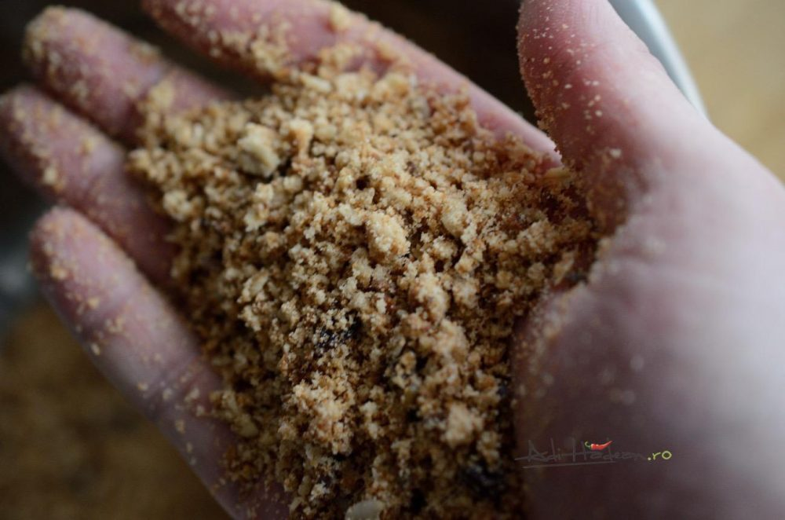
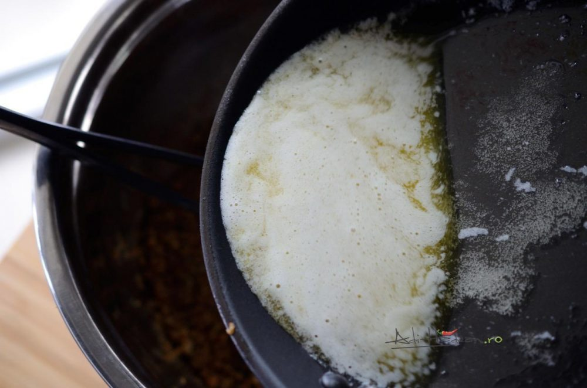
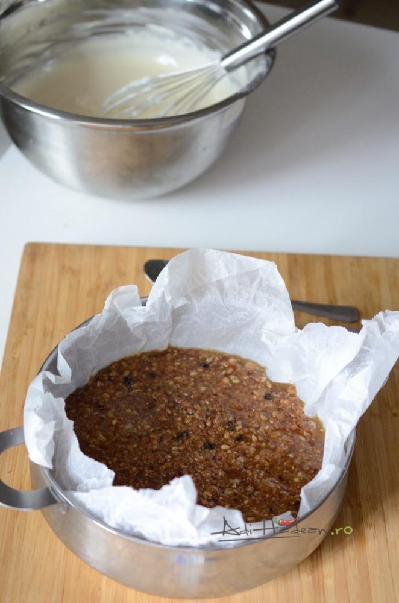
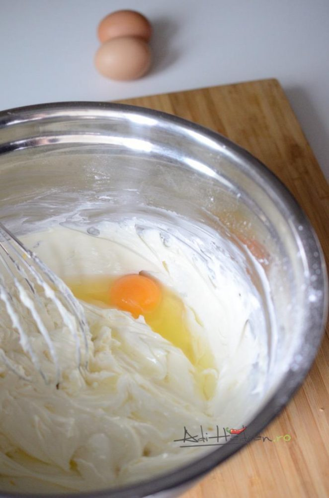
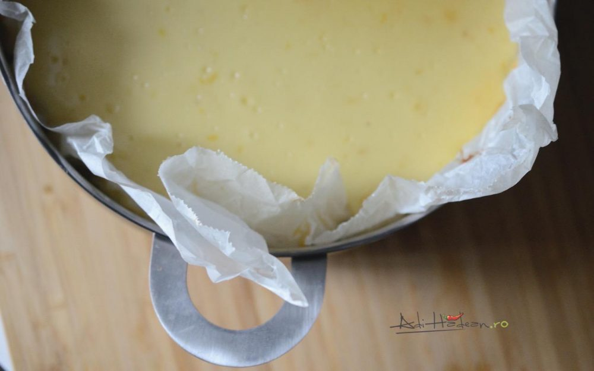
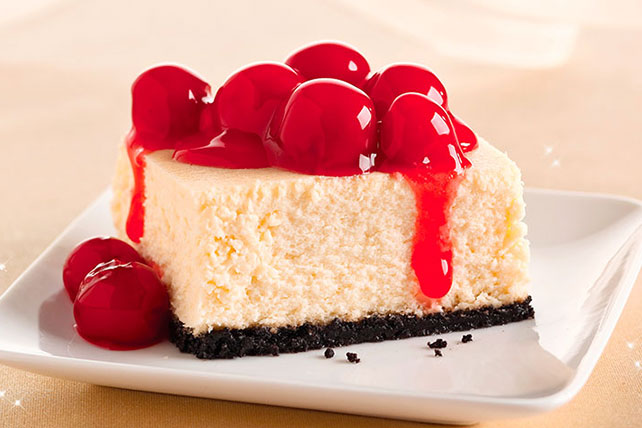
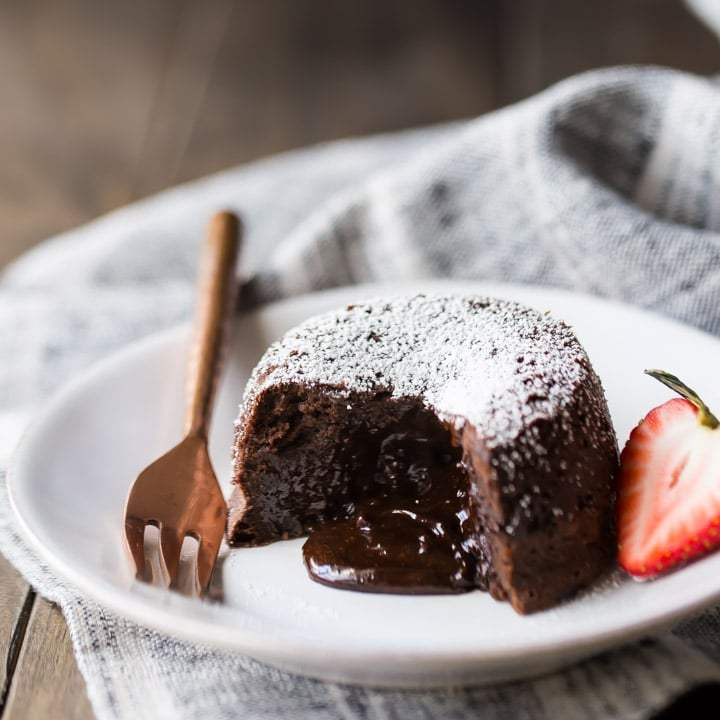

E mai puțin complicat decât pare, și aici nu mă refer la coacere cât la scoaterea prăjiturii din strecurătoare. Trebuie doar să te asiguri că ai lăsat suficient de multă hârtie de copt la exterior, să ai de ce prinde, și că prăjitura s-a răcit de tot înainte de a o scoate. Acestea fiind spuse, să trecem la rețetă, că asta v-o interesa mai mult decât strecurătoarea în care am copt-o.







Ingredientele necesare:
- Blat
- 400g biscuiți
- 150g unt topit
- Cremă
- 600g cremă de brânză
- 150g zahăr pudră
- 500ml smântână
- 100ml apă
- 20g gelatină
Instrucțiuni pentru realizare desert:
- Zdrobiți biscuiții
- Adăugați unt peste biscuiți
- Am copt blatul 15 minute la 180 de grade Celsius. L-am scos din cuptor și l-am lăsat să se răcească puțin.
- Crema: E important să adaugi ouăle pe rând pentru a se încorpora bine. O spatulă (da, nici din aceea nu am avut la îndemână) din silicon e mai potrivită decât un tel, întrucât nu aduce prea mult aer în compoziție, dar te poți descurca și cu telul atâta timp cât nu devii prea energic.
- Toarnă compoziția peste blat. Coace prăjitura o oră și un sfert la 140 de grade Celsius. Se va coace uniform și nu va crăpa la suprafață ori în profunzime.
- Având în vedere condițiile, m-am declarat satisfăcut. De fapt, rezultatul a fost mult peste medie, cu sau fără strecurătoare.
